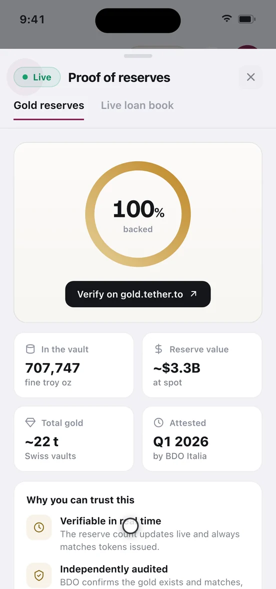

How your gold is held
Auri never takes possession of your gold. You own Tether Gold — one troy ounce of vaulted physical metal per token — at a blockchain address tied to your account, and any loan you take sits in a public lending market anyone can inspect without an Auri login. This page sets out that structure precisely, names the companies genuinely on the other side of your holdings, and lists what Auri has not yet published well enough for you to verify.
What you actually own
When you buy, your money does not become a line item in an Auri account. It is converted to USDC on regulated payment rails, swapped into Tether Gold, and credited to a self-custody vault address belonging to your account. The token carries six decimals, so your balance is denominated in troy ounces to six places — the smallest holding is 0.000001 oz.
Each whole token represents one troy ounce of physical gold vaulted by Tether Gold's custodian. The consequence most gold apps blur: your claim on metal is a claim on Tether Gold's reserves, not on Auri. Auri is the interface, routing and pricing layer. It is not the vault, the issuer or the lender.
| What you hold | The form it takes | Who is on the other side | Where you check |
|---|---|---|---|
| Gold | XAUt0 at your address on Arbitrum One (chainId 42161), 0x40461291347e1eCbb09499F3371D3f17f10d7159 | Tether Gold, via native XAUt locked on Ethereum | gold.tether.to |
| Cash | USDC at the same address, 0xaf88d065e77c8cC2239327C5EDb3A432268e5831 | Circle, the USDC issuer | circle.com/transparency |
| A loan | A borrow position: XAUt0 collateral, USDC debt | The market's suppliers — you owe USDC to the market, not to Auri | the market on Morpho |
| The bars | Allocated, serial-numbered physical gold | Vault operator: UNKNOWN. Vault city: UNKNOWN | Tether Gold's published attestation |
XAUt and XAUt0 — why there are two tickers
Native Tether Gold (XAUt) exists only on Ethereum mainnet. Auri runs on Arbitrum, so the asset you hold is XAUt0, the LayerZero OFT version of the same gold.
The model is lock-and-mint against a single canonical reserve. Native XAUt is locked in an adapter contract on Ethereum at 0xb9c2321BB7D0Db468f570D10A424d1Cc8EFd696C, and an equal amount of XAUt0 is minted on the destination chain. Moving between chains is an atomic burn-and-mint: burning XAUt0 unlocks the original XAUt. Total XAUt0 is therefore bounded by the XAUt in that adapter, which is itself backed one-for-one by vaulted metal. XAUt0 is not a token with its own separate reserve, and not an unbacked bridge IOU.
It is still a layer, and two things follow. First, the redeemable asset is Ethereum XAUt — reaching physical metal means unwinding to Ethereum, then following Tether Gold's own redemption process, whose minimum, fee and lead time are UNKNOWN in Auri's material. Second, XAUt0 tracks gold only while the adapter and the cross-chain messaging layer work as designed.
A bridged representation can break while the underlying asset is fine. If that layer failed, XAUt0 on Arbitrum could stop tracking XAUt even with every physical bar untouched. Neither Auri nor Tether Gold can repair it. If you want gold with no cross-chain layer at all, XAUt0 is the wrong instrument for you.
Your keys, your address, your account
Sign-in is passwordless via Privy — a passkey, or a six-digit code by email or phone, with Face ID or fingerprint unlock on mobile. In Profile, Self-custody vault address shows the address holding your gold, and Linked wallets lets you attach your own.
- Gifts, sends and cross-border transfers always require step-up authentication, as do sells and withdrawals to an external wallet: a passkey approval, or two six-digit codes, one emailed and one from your authenticator app. Auri cannot approve that step for you.
- Bank and Interac withdrawals can only go to an account in your own name — third-party payouts are not permitted.
- The one-time identity check applies to bank, Interac and debit-card methods only. Funding or withdrawing USDC from your own wallet requires no ID.
- Every transaction expands in Activity into its individual legs with transaction hashes and references, so you can audit each step rather than trust a summary line.
The limit of the phrase "your keys". Auri has not published an exact key-custody description. Whether the signing key lives only on your device, whether it is split with an infrastructure provider, whether you can export it, and what account recovery requires are all UNKNOWN. Until that is documented, treat the vault address as yours to direct through Auri, not as a wallet you could walk away with.
The four moments when your value sits elsewhere
In the steady state Auri holds none of your money: gold and USDC are on-chain at your address. Four windows are different, and a trust page that omits them is misleading.
- A fiat leg is in flight. With Interac e-Transfer in Canada, a bank transfer in the US, or a debit card, the money is with a payment partner between leaving your bank and appearing as USDC — and in reverse on a withdrawal, quoted at one to two business days. That window is not self-custodial in any sense. Payment partner names: UNKNOWN.
- A loan is open. Collateral is posted into the Morpho market and your gold splits into locked and free. Locked gold cannot be sold, gifted, sent or remitted until you repay or unlock it. See borrow.html.
- A gift is unclaimed. Gifted gold sits in an escrow contract on Arbitrum until claimed. You can remind or cancel, and cancelling returns the gold to you. See gift-send.html.
- A Boost position is open. The same collateral, at a far higher loan-to-value. See boost.html.
Legal ownership is the largest gap on this page. The on-chain design is intended to mean your gold is never an Auri liability and never reachable by Auri's creditors. The instruments that would prove it — the ownership structure (bailment, trust or bare custody), the insolvency treatment, and a statement that customer assets never appear on Auri's balance sheet — are UNKNOWN and unpublished. Judge that gap yourself rather than accepting the architecture as a substitute for it.
The proof surface, field by field
The reserves banner on Home, the Audited reserves tile and Live loan book all open a two-tab proof view. The Gold reserves tab shows live spot, a "100% backed" statement, a link out to gold.tether.to, and a metric grid: ounces in the vault, reserve value at spot, total tonnage and the attestation period — plus a personal table listing your holding, its physical backing, the custodian, your allocation and the last attestation date. The Live loan book tab shows the Morpho market metrics, the contract address, and a link to open the loan book directly.

Read the gold figures at the source. They mirror Tether Gold's public data: Tether's figures and Tether's attestation, not an Auri attestation of Auri's own holdings. The current build's reserve tiles are placeholder values and show two attestation dates that disagree with each other, so do not rely on them yet. The loan-book tab does read live. Headline numbers also need a timestamp with a named timezone, and Auri has committed to no publication cadence in writing — UNKNOWN.
What an attestation does not prove
- It is usually not an audit. Reserve engagements of this kind are commonly structured as agreed-upon procedures, where the practitioner performs specified procedures and reports findings without providing an opinion or conclusion. That is materially weaker than a financial-statement audit, and calling it an audit is inaccurate.
- It is a snapshot. It describes one moment, and says nothing about the day after or what happened between two snapshots.
- Its scope is the gold behind the token, not the operator. It does not address Auri's solvency, other liabilities or equity. A clean reserves report and a failing company are perfectly compatible.
- A SOC 2 is not a reserves proof. It covers controls, not the existence of the assets.
- It does not prove your balance is included. A total is not evidence about you. That needs a per-user proof: an allocation view when logged in, and a login-free reconciliation you can check without one.
- The firm should be named and host its own report. The attesting firm, engagement type and standard applied are UNKNOWN as Auri-confirmed facts. Hosting the report on the firm's own domain removes the "you could have edited that PDF" objection entirely.
None of this exists today: a public, login-free reconciliation of customer balances against the bar list; a downloadable bar-level file with serial numbers, fine weight, fineness and refiner; a CSV you can re-add in a spreadsheet to confirm client balances do not exceed the fine weight held; or a dated machine-readable feed of holdings and claims. Treat their absence as a limit on what you can verify right now.
The lending market is public — go look at it
Auri's loans are USDC borrowed against XAUt0 in one Morpho market on Arbitrum One, market id 0xed3f9a960d927791a354cc4549b1b44af9dd06c11566ea9d0bff66b8e4969610. No account is needed: open it on Morpho. What you can verify there instead of taking Auri's word for it:
- The liquidation parameter. The on-chain LLTV is 77%. That is the level at which liquidation becomes possible — a ceiling to stay well clear of, not headroom to spend. Your exact liquidation level, liquidation price and health factor are shown live in the app; read borrow.html#liquidation before borrowing.
- The rate floats. It is not fixed. We observed roughly 3.48% and then roughly 3.70% on the same market within an hour. Any rate on a screen is a reading, not a promise.
- The oracle. Liquidation is decided by the market's price oracle at
0xA576e986ADD337Ff09a57d7778C477d27ee7bF8b— not by the gold price on Auri's site or in the app header. Those are display feeds; the oracle is the one with consequences. - The size. This market is small. On a direct check, around US$2,051 of USDC was available to borrow against roughly US$15,027 of collateral, with a single supplying vault, Steakhouse High Yield USDC. Both figures move constantly and a market this size may not fill a large borrow. Check live before planning around it.
Whether your specific position can be managed from a wallet you control, without Auri's app, is UNKNOWN. The market is public; the addressing of your individual position is undocumented. Ask before you borrow.
The stablecoin half of the story
Gold-token issuers routinely skip this. Auri's cash balance is USDC issued by Circle, and an Auri loan is a debt denominated in USDC — a second issuer sits inside your position whether you think about it or not. If USDC traded below a dollar, your cash buys less gold than its face value suggests; a USDC loan is an obligation in a unit that can itself move, in both directions. Read circle.com/transparency with the same scepticism this page asks for. Note too that the underlying assets are USD-referenced: the 45 residence countries and 28 display currencies in the app are presentation only, so if you live outside the US, currency movement affects you on top of the gold price. See reference.html.
If Auri stopped operating tomorrow
This is the question that matters, and it splits into three — only one of which has a clean answer today.
Could you still reach your tokens? The assets are at an address, not in an Auri database, so they would still exist. Whether you could move them without Auri depends entirely on the key-custody model above, which is UNKNOWN. This is the single most important thing left to document.
Could you still manage your loan? The market is public and its parameters live on-chain, so it keeps functioning, keeps accruing interest and keeps liquidating positions that cross the threshold regardless of Auri's status. Whether your position is addressed by a wallet you can sign for is again UNKNOWN — and this matters more than it sounds, because an open loan you cannot repay is a position that liquidates itself.
Could you still get physical gold? That was never Auri's to give. Redemption is Tether Gold's process, on Tether's terms, starting from native XAUt on Ethereum. Minimum, fee and lead time: UNKNOWN here — read them from Tether directly.
What does not depend on Auri: the bars, Tether Gold's attestation, the existence and parameters of the Morpho market, and the on-chain record of every transaction you have made. What does: the app, the pricing layer, the fiat rails, and — until the key model is published — your practical ability to act on your own holdings. The honest reading is that the asset layer is genuinely independent and the access layer is not yet proven to be.
What Auri has not published yet
This table is deliberately part of the page. A trust page that lists only what it can prove is worth more than one that reads well.
| Item a careful reader would want | Status |
|---|---|
| Custodian's full legal name, vault operator, vault city | UNKNOWN |
| LBMA accreditation status of the vault and the bars | UNKNOWN |
| Legal ownership structure and insolvency treatment of customer gold | UNKNOWN |
| Insurer, perils covered, limits, exclusions, who pays | UNKNOWN |
| Whether physical redemption is offered, and its minimum, fee and lead time | UNKNOWN |
| Attesting firm, engagement type, standard applied, stated cadence | UNKNOWN |
| Bar list with serial numbers, fine weight, fineness, refiner | Not published |
| Per-user verification path and login-free reconciliation | Not published |
| Machine-readable feed of holdings and claims, plus an archive of past reports | Not published |
| Key-custody model: who can sign, whether keys are exportable, what recovery requires | UNKNOWN |
| Payment partners handling fiat deposits and withdrawals | UNKNOWN |
| Storage or custody fee, if any, and how it is charged | UNKNOWN |
Nothing here is financial, tax or legal advice. Gold can fall in value, a borrowed position can be liquidated, and a bridged token can break independently of the metal behind it. For the numbers rather than the structure, see reference.html and risks.html. If you have read this and you are satisfied, the next step is start.html.
Auri is a non-custodial software platform, not a bank. Nothing here is financial, tax or legal advice. Digital assets are not deposits and are not covered by any deposit-insurance scheme. Screenshots come from a demo build, so the figures in them are illustrative. Full risk & legal notice.